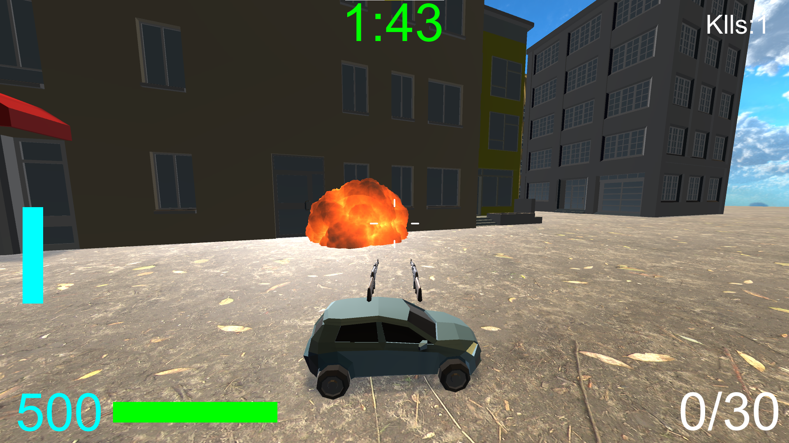
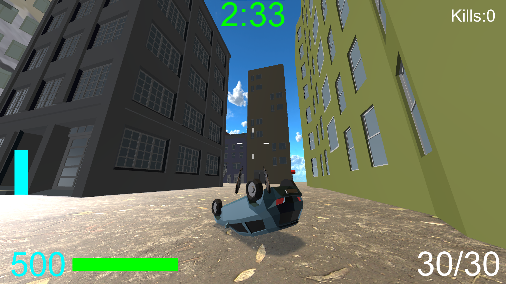
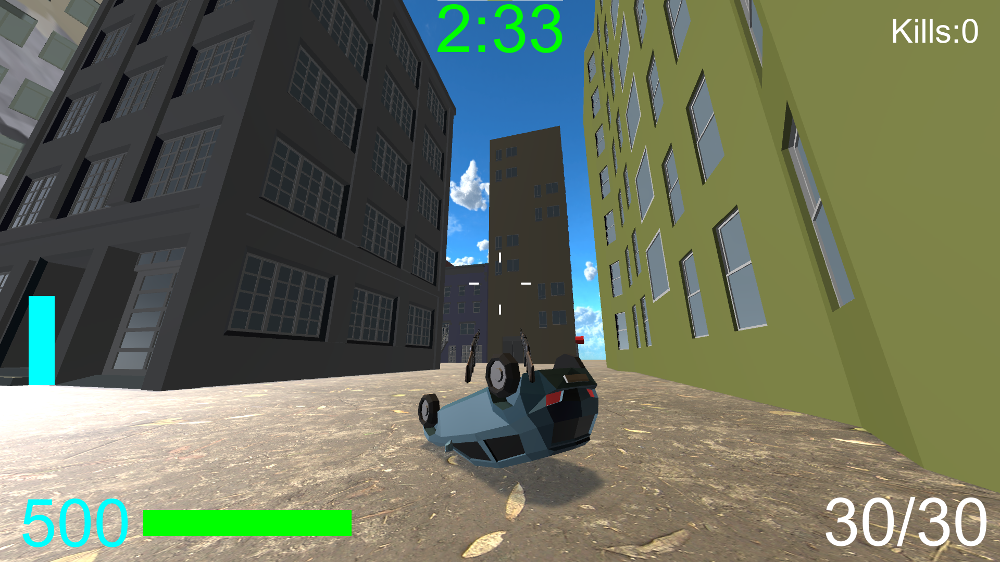
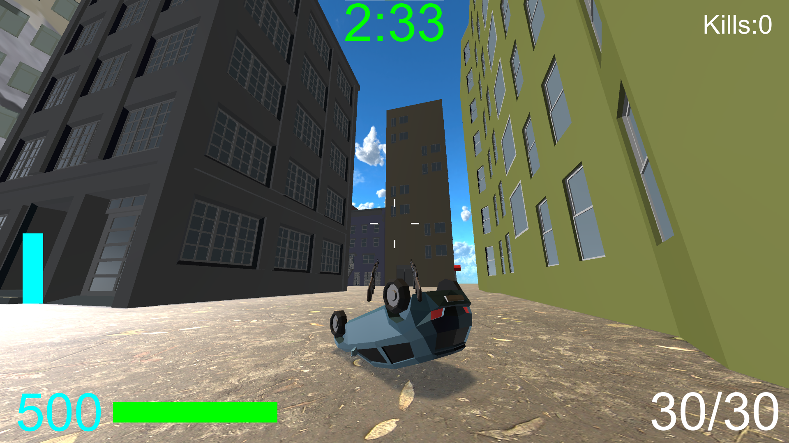

 




ゲームルール
一番多くの敵を倒した人が勝ち、というFFA形式のゲーム。
操作方法:
アクセル・ハンドル操作: WASD
ブースト: LeftShift
ジャンプ: Space
発射: 左クリック
ADS: 右クリック
リロード: R
スコアボード: Tab
メニュー: Esc
About:
2022年11月まで半年近くかけて作っていたゲーム。
2Dゲームが作れたし、今度は3Dゲームもつくれるやろ！という生半可な気持ちで超大作を制作しようとしたため地獄を見た上に、最終的にデータが吹っ飛んでメンタルブレイク。(マジで立ち直るのに時間かかったよ...)
なんとか最終ビルドのデータがGoogleDriveに残っていたのが救いだが、テクスチャが壊れていたりしてます...
みんなもデータのバックアップはきちんととっておこうね！
ちなみに今はクラウド&ローカルHDDへの二重バックアップへ進化しています(笑)
進展です。
— ShakeRice@ゲーム制作 (@SR_Shake_Rice) November 10, 2022
検査結果はデータ復旧不能となりました。
もうデータの救出は半ば諦めていますが、最後の望みをかけて自分でもう少し何とかできないか探ってみようと思います。#PC #PCエコサービス #HDD #データ復旧 https://t.co/SHLT8Uzm00 pic.twitter.com/bQGVqxOeXW